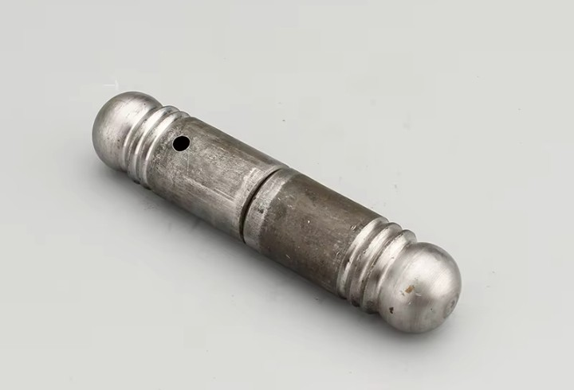

About Me
I am a CNC programmer based in Nairobi, Kenya. My work focuses on precision machining using CNC lathes and milling machines.
I have experience in producing mechanical components such as stepped shafts,V-grooves,T-slots,Gear teeth threaded parts and milled pockets using CNC machining techniques.I also help in blue print drafting and interpretation.
Technical Skills
- CNC Lathe Programming
- Manual G-code Programming
- Precision Turning Operations
- Milling and Pocket Machining
- Thread Cutting
- SOLIDWORKS 2D& 3D drawing
- CAD/CAM
Machines Used
- CK6150 CNC Lathe with GSK control system
- Vertical Machining Center
- Power Press Machines
My CNC Projects
Turned Bush

Precision CNC turned bush with fine surface finish.
Thread Cutting

External threading using CNC lathe.
Milling Component

Face milling and slot cutting operation.
Machining Projects
Turned Bush Component

Precision CNC turned bush with fine surface finish.

Stepped Shaft Turning
Machined on CNC lathe including facing, rough turning and finishing operations.

Thread Cutting
Precision M10 × 1.25 thread machining using CNC lathe.

Pocket Milling
Aluminum pocket milled using vertical machining center.
Sample CNC G-Code
G21
G90
G00 X50 Z5
G01 X0 Z-20 F0.2
G00 X60
M30
Download more CNC programs from the repository.
Contact
Email: obechvictor0@gmail.com
GitHub: github.com/obechvictor
Location: Nairobi, Kenya